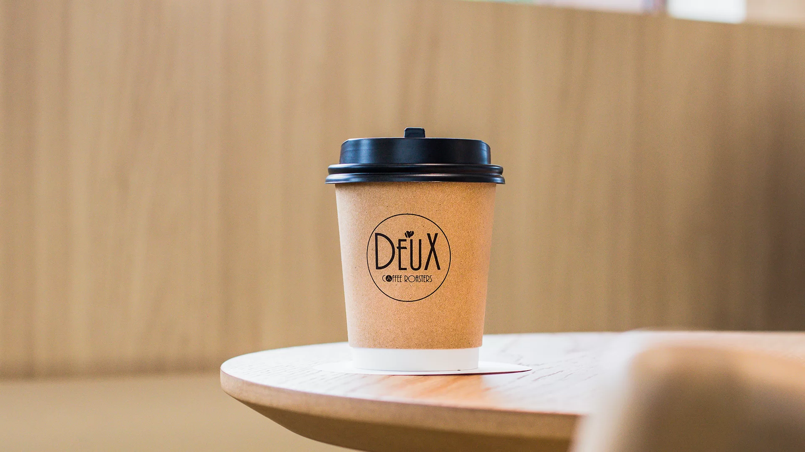

<div class="app-container">
    <div class="p-menubar">
      <p-menubar class="col-12 w-full" [model]="items"></p-menubar>
    </div>
  
    
  
    <main>
      <router-outlet></router-outlet>
    </main>
  
    <footer class="footer">
      <div class="container">
        <p>&copy; 2024 Tu Cafetería. Todos los derechos reservados.</p>
        <ul class="footer-links">
          <li><a routerLink="/es">Sobre Nosotros</a></li>
          <li><a routerLink="/contacto">Contacto</a></li>
        </ul>
      </div>
    </footer>
  </div>
  